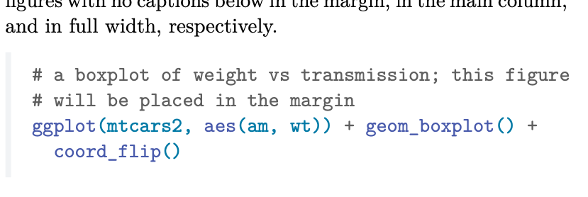

Page Layout
Overview
Quarto supports a variety of layout options that make it possible to create content in more complex layouts across a document. Using layout features you can create that
- Fill the main content region
- Overflow the content region
- Span the entire page
- Overflow the left or ride of the content region
- Appear in the document margin
All of the layout capabilities described in this document work for HTML output and many work for PDF and LaTeX output. For details about the PDF / LaTeX output, see PDF/LaTeX Layout.
Controlling Layout
Global Options
Some layout options can be specified globally in document yaml. For example:
---
reference-location: margin
---All of the below options currently only support setting a value of margin which tells Quarto to place the corresponding element in the margin.
|
Option |
Description |
|---|---|
|
|
Where to place footnotes. Defaults to |
|
|
Where to place citations. Defaults to |
|
|
Where to place figure and table captions. Defaults to |
|
|
Where to place figure captions. Defaults to |
|
|
Where to place table captions. Defaults to |
Code Cell Options
You can also set layout column on specific code cells. This controls the layout of content that is produced by the code cell.
```{r}
#| column: page
plot(cars)
```|
Option |
Description |
|---|---|
|
|
Layout column to use for code cell outputs. See column options below. |
|
|
Layout column to use for code cell figure outputs. See column options below. |
|
|
Layout column to use for code cell table outputs. See column options below. |
|
|
Where to place figure and table captions produced by this code cell. Defaults to |
|
|
Where to place captions for figures produced by this code cell. Defaults to |
|
|
Where to place captions for tables produced by this code cell. Defaults to |
Specifying Column Using CSS Classes
In addition to global and code cell specific options, you may use layout classes (prefixed with column-) to position elements using raw markdown, such as:
::: {.column-margin}
Hello world, this content will appear in the margin!
:::Column Options
Column options can use any of the following valid column names. The columns are explained with examples in the sections that follow.
|
Column |
Column Names |
Class Names |
|---|---|---|
|
Body |
|
|
|
Page |
|
|
|
Screen Inset |
|
|
|
Screen |
|
|
|
Margin |
|
|
Body Width Content
By default, elements are position in the body of the document and are allowed to span the content of the document, like the below.
.column-body
But if you’d like, you can extend content slightly outside the bounds of the body by using column-body-outset, which extends just outside the bounds of the body:
.column-body-outset
Page Width Content
If you need even more space for your content, you can use column-page to make the content much wider, though stopping short of extending across the whole document.
.column-page
For example, to create a wider image, you could use:
:::{.column-page}

:::which will create a wide image that extends outside the bound of the body (but short of extending to the edge of document).

For programmatic output, you can specify the page column in your code cell options. For example:
```{r}
#| column: page
knitr::kable(
mtcars[1:6, 1:10]
)
```| mpg | cyl | disp | hp | drat | wt | qsec | vs | am | gear | |
|---|---|---|---|---|---|---|---|---|---|---|
| Mazda RX4 | 21.0 | 6 | 160 | 110 | 3.90 | 2.620 | 16.46 | 0 | 1 | 4 |
| Mazda RX4 Wag | 21.0 | 6 | 160 | 110 | 3.90 | 2.875 | 17.02 | 0 | 1 | 4 |
| Datsun 710 | 22.8 | 4 | 108 | 93 | 3.85 | 2.320 | 18.61 | 1 | 1 | 4 |
| Hornet 4 Drive | 21.4 | 6 | 258 | 110 | 3.08 | 3.215 | 19.44 | 1 | 0 | 3 |
| Hornet Sportabout | 18.7 | 8 | 360 | 175 | 3.15 | 3.440 | 17.02 | 0 | 0 | 3 |
| Valiant | 18.1 | 6 | 225 | 105 | 2.76 | 3.460 | 20.22 | 1 | 0 | 3 |
Screen Width Content
If you’d like, you can have content span the full width of the page with no margin (full bleed). For this, you can specify column: screen for your code cell (or use column-screen on a div).
Using simple markdown you can create a div that spans the full page like so:
::: {.column-screen}

:::.column-screen
For programmatic output, you can use code cell options to specify the column, The following code display a Leaflet map across the whole page.
```{r}
#| column: screen
library(leaflet)
leaflet() %>%
addTiles() %>% # Add default OpenStreetMap map tiles
addMarkers(lng=174.768, lat=-36.852, popup="The birthplace of R")
```Screen Inset Content
If you’d like a full width appearance, but would like to keep a margin, you can use column: screen-inset or column: screen-inset-shaded.
The screen-inset column includes a left and right margin on the element. For example, using the following markdown will create content that spans the page but with a small right and left margin.
::: {.column-screen-inset}

:::.column-screen-inset
If you use screen-inset-shaded, the content itself will span the screen-inset column but will be wrapped with a lightly shaded background. For example:
```{r}
#| column: screen-inset-shaded
library(leaflet)
leaflet() %>%
addTiles() %>% # Add default OpenStreetMap map tiles
addMarkers(lng=174.768, lat=-36.852, popup="The birthplace of R")
```Column layouts like screen-inset-shaded will work with advanced figure layout. For example, it is straightforward to create a multi column presentation of figures that spans the document:
```{r}
#| column: screen-inset-shaded
#| layout-nrow: 1
plot(cars)
plot(iris)
plot(pressure)
```


Margin Content
Quarto documents contain a right margin that can host a variety of content. When content is placed in the margin of the document, Quarto will automatically adjust the layout of the document to provide a slightly wider margin and a slightly narrowed content area. For example, the following markdown can be used to place an image in the margin:
::: {.column-margin}

:::.column-margin
Margin Figures
Figures that you create using code cells can be placed in the margin by using the column: margin code cell option. If the code produces more than one figure, each of the figures will be placed in the margin.
```{r}
#| label: fig-margin
#| fig-cap: "MPG vs horsepower, colored by transmission."
#| column: margin
library(ggplot2)
mtcars2 <- mtcars
mtcars2$am <- factor(
mtcars$am, labels = c('automatic', 'manual')
)
ggplot(mtcars2, aes(hp, mpg, color = am)) +
geom_point() + geom_smooth(formula = y ~ x, method = "loess") +
theme(legend.position = 'bottom')
```
Margin Tables
You an also place tables in the margin of your document by specifying column: margin.
```{r}
#| column: margin
knitr::kable(
mtcars[1:6, 1:3]
)
```| mpg | cyl | disp | |
|---|---|---|---|
| Mazda RX4 | 21.0 | 6 | 160 |
| Mazda RX4 Wag | 21.0 | 6 | 160 |
| Datsun 710 | 22.8 | 4 | 108 |
| Hornet 4 Drive | 21.4 | 6 | 258 |
| Hornet Sportabout | 18.7 | 8 | 360 |
| Valiant | 18.1 | 6 | 225 |
You should be aware that this layout will typically only work from small and narrow tables. Tables with more than a handful of columns will typically not lay out well in the margin.
Arbitrary Margin Content
You can also place content in the margin by targeting the margin column using column-margin.
For example, the following will place the rendered content and equation in the margin.
:::{.column-margin}
We know from *the first fundamental theorem of calculus* that for $x$ in $[a, b]$:
$$\frac{d}{dx}\left( \int_{a}^{x} f(u)\,du\right)=f(x).$$
:::We know from the first fundamental theorem of calculus that for \(x\) in \([a, b]\):
\[\frac{d}{dx}\left( \int_{a}^{x} f(u)\,du\right)=f(x).\]
Margin Notes and Citations
Footnotes and the bibliography typically appear at the end of the document, but you can choose to have them placed in the margin by setting the following option1 in the document front matter:
---
reference-location: margin
citation-location: margin
---With these options set, footnotes and citations will automatically be placed in the margin of the document rather than the bottom of the page. As an example, when I cite Xie, Allaire, and Grolemund (2018), the citation bibliography entry itself will now appear in the margin.
Footnotes
You can also position references in other location (such as the bottom of the block, section, or document).↩︎
Asides
Asides allow you to place content aside from the content it is placed in. Asides look like footnotes, but do not include the footnote mark (the superscript number). You can create an aside using mark down such as:
aside which places it in the margin without the sidenote mark.[This is a span that has the class `aside` which places it in the margin without the sidenote mark.]{.aside}You can also use the html tag <aside> which will be properly processed for both HTML and PDF/LaTeX output.
<aside>This is a span that has the class `aside` which places it in the margin without the sidenote mark.</aside>Margin Captions
For figures and tables, you may leave the content in the body of the document while placing the caption in the margin of the document. Using caption-location: margin in a code cell or document front matter to control this. For example:
```{r}
#| label: fig-cap-margin
#| fig-cap: "MPG vs horsepower, colored by transmission."
#| caption-location: margin
library(ggplot2)
mtcars2 <- mtcars
mtcars2$am <- factor(
mtcars$am, labels = c('automatic', 'manual')
)
ggplot(mtcars2, aes(hp, mpg, color = am)) +
geom_point() + geom_smooth(formula = y ~ x, method = "loess") +
theme(legend.position = 'bottom')
```
Multiple Outputs and Margins
You can also target specific output types (for example, figures) to be placed in the margin. For example, the following code will render a table summarizing the mtcars dataset and render a lot of the data in the margin next to the table. You can use tbl-column to target tables that are output by a code cell.
```{r}
#| fig-column: margin
library(ggplot2)
mtcars2 <- mtcars
mtcars2$am <- factor(
mtcars$am, labels = c('automatic', 'manual')
)
knitr::kable(
mtcars[1:6, 1:6]
)
ggplot(mtcars2, aes(hp, mpg, color = am)) +
geom_point() + geom_smooth(formula = y ~ x, method = "loess") +
theme(legend.position = 'bottom')
```| mpg | cyl | disp | hp | drat | wt | |
|---|---|---|---|---|---|---|
| Mazda RX4 | 21.0 | 6 | 160 | 110 | 3.90 | 2.620 |
| Mazda RX4 Wag | 21.0 | 6 | 160 | 110 | 3.90 | 2.875 |
| Datsun 710 | 22.8 | 4 | 108 | 93 | 3.85 | 2.320 |
| Hornet 4 Drive | 21.4 | 6 | 258 | 110 | 3.08 | 3.215 |
| Hornet Sportabout | 18.7 | 8 | 360 | 175 | 3.15 | 3.440 |
| Valiant | 18.1 | 6 | 225 | 105 | 2.76 | 3.460 |

Left and Right Overflowing Content
You can also extend content outside the body region on only the left or right side of the document by using the right and left versions of the body, page, and screen columns to layout your content. The left or right version of these columns are as follows:
.column-body-outset-right
.column-page-right
.column-screen-inset-right
.column-screen-right
.column-body-outset-left
.column-page-left
.column-screen-inset-left
.column-screen-left
For example, the below displays a Leaflet map from the site navigation on the left to the edge of the page on the right.
```{r}
#| column: screen-right
library(leaflet)
leaflet() %>%
addTiles() %>% # Add default OpenStreetMap map tiles
addMarkers(lng=174.768, lat=-36.852, popup="The birthplace of R")
```PDF/LaTeX Layout
While most of the layout capabilities described are supported for both HTML and PDF output, some are available only for HTML output. You can use the full set of features for HTML to create a complex layout, when you render PDF or LaTeX output, any content will automatically be placed in the most appropriate related column.
| Layout | PDF / LaTeX Column |
|---|---|
| Body width content | body-content |
| Page width content | page-right |
| Screen width content | page-right |
| Margin content | margin |
| Right overflow content | page-right |
| Left overflow content | body-content |
Page Geometry
When you render a PDF using content in the margin or content that spans the page, Quarto automatically will adjust the page geometry for built in known document classes (KOMA article, report, or book) to create a slightly narrower body content region and a slightly wider margin region. This adjustment will incorporate known paper sizes to create a reasonable page geometry for most content.
You can control the page geometry directly yourself by setting geometry options in your document’s front matter. For example:
---
geometry:
- left=.75in
- textwidth=4.5in
- marginparsep=.25in
- marginparwidth=2.25in
---You can use this option to control the page geometry for the built in document classes or to customize the geometry of other document classes that you may be using.
If you’d like to view the page geometry in your rendered PDF, you can pass showframe to the geometry option as in the below example.
---
geometry:
- showframe
---Code Block Appearance
When rendering a PDF with margin spanning content or margin content, Quarto will automatically adjust the appearance of code blocks. Rather than having a solid background color for the code block, a left border treatment will be used. This allows non-breaking code to overflow into the margin without cosmetic issues created by the code block background (which does not overflow into the margin region).

HTML Output
Note that the HTML content layout is responsive- as the page width shrinks, elements will automatically adjust their position. Elements that appear in the margins will move inline with the content and elements that span the body and margin will automatically span only the body.